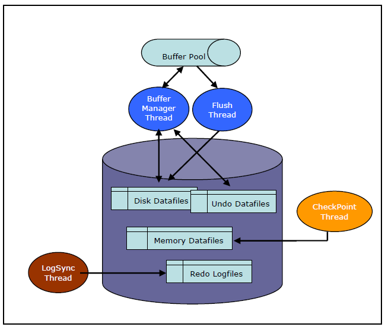

앞에서 살펴본 바와 같이 트랜잭션 처리과정에서 발생하는 리두로그의 기록과 메모리DB의 영속성을 위한 체크포인트 단계 및 디스크DB의 트랜잭션 처리를 위한 디스크I/O는 동일 디스크에 구성할 경우 디스크병목을 발생시키기 때문에 이로 인한 성능감소를 최소화하기 위해 리두로그 및 각각의 영역을 물리적으로 분리된 디스크로 구성하는 것이 바람직하다.
디스크I/O

위의 그림처럼 리두로그의 기록, 체크포인트, 버퍼관리자에 의한 디스크I/O가 하나의 디스크에 몰려 있을 경우 디스크병목은 회피할 수 없음으로 사용자는 본 문서를 참고로 하여 효율적인 디스크구성을 하는 것이 바람직하다.
구성예제(1)
좀 더 세분화 하여 다음과 같이 구성을 권고하며 시스템의 환경 상 구성이 어려울 경우라도 리두로그와 그 외 영역은 반드시 물리적으로 분리된 디스크로 구성하도록 한다.
분류 | 디스크구성 |
|---|---|
ALTIBASE HOME | /ALTIBASE |
리두로그 | /ALTIBASE_REDO_LOG |
데이터 공간 (메모리DB) | /ALTIBASE_MEMORY_DATA |
데이터 공간 (디스크DB) | /ALTIBASE_DISK_DATA |
데이터 공간 (디스크인덱스) | /ALTIBASE_DISK_INDEX |
디스크DB 언두 공간 | /ALTIBASE_DISK_UNDO |
- ALTIBASE HOME은 개발 및 운영을 위한 바이너리, 헤더, 라이브러리와 같은 파일을 저장하는 공간뿐 아니라 운영 중에 발생하는 중요한 trace log를 기록하기 때문에 별도의 공간으로 분리하여 설정하는 것을 권장한다.
- 메모리 인덱스의 경우는 별도의 디스크I/O는 존재하지 않는다. 이는 ALTIBASE 구동단계에서 메모리 DB를 모두 적재한 후 메모리상에서 인덱스 재구성을 진행하기 때문이다. (메모리 인덱스 변경에 대한 별도의 로깅은 하지 않는다.)
- 디스크DB 및 디스크인덱스를 분리할 것을 권장하는 것은 각각의 구성된 데이터파일의 확장으로 인한 I/O나 DB형상 변경작업등을 수행할 때 디스크I/O의 경합을 최소화 하기 위한 목적이다.
- 백업과 관련된 디스크 고려사항은 본 문서에서 기술하지 않으며 백업/복구 가이드 문서를 참조하도록 한다.
구성예제(2)
최소한의 분리 구성이며, 이러한 구성은 다음과 같은 환경인 경우 권유하는 구성이다.
- 메모리 DB로 구성하는 경우
- 업무 상 변경작업이 많지 않는 디스크 DB를 구성하는 경우
- 시스템의 환경 상 최소의 DISK를 갖고 있는 경우
분류 | 디스크구성 |
|---|---|
리두로그 | /ALTIBASE_REDO_LOG |
ALTIBASE HOME 및 데이터 | /ALTIBASE |
이와 같은 구성은 메모리DB를 위주로 사용할 경우, 혹은 변경작업이 많지 않은 디스크DB만의 서비스 환경에 한하여 디스크I/O경합을 감소시킬 수 있다.
구성예제(3)
다양한 업무와 대량의 데이터를 디스크 DB로 구성하는 경우 권유하는 구성이다.
복잡한 쿼리와 단순 처리 퀴리를 구분하여 별도의 테이블 스페이스를 구성하고, 테이블 스페이스의 물리적인 데이터 파일을 분리된 디스크로 구성하는 방안으로 디스크 I/O를 분산시키는 관점에서는 효율적이다. 다만 디스크 버퍼 리플레이스가 빈번한 환경에서는 효율성은 낮다.
분류 | 디스크구성 |
|---|---|
리두로그 | /ALTIBASE_REDO_LOG |
ALTIBASE HOME 및 메모리DB | /ALTIBASE |
디스크DB-1 (복잡업무) | /ALTIBASE_DISK_COMPLEX |
디스크DB-2 (단순업무) | /ALTIBASE_DISK_SIMPLE |
복잡한 쿼리 수행과 관련된 테이블스페이스의 위치와 단순처리를 위주로 하는 테이블스페이스의 물리적인 데이터파일을 분리된 디스크로 구성된 볼륨에 위치시키는 방법도 디스크I/O를 분산시키는 의미에서 유효할 수 있다. 다만, 이와 같은 구성도 버퍼리플레이스가 빈번한 환경에서는 기대한 효과를 얻기 어려울 수 있다.
{kind=link}